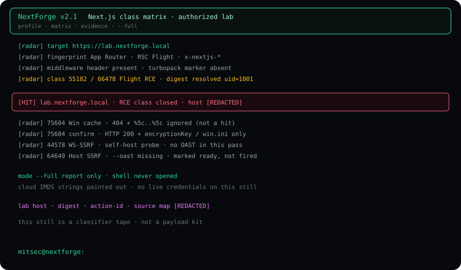
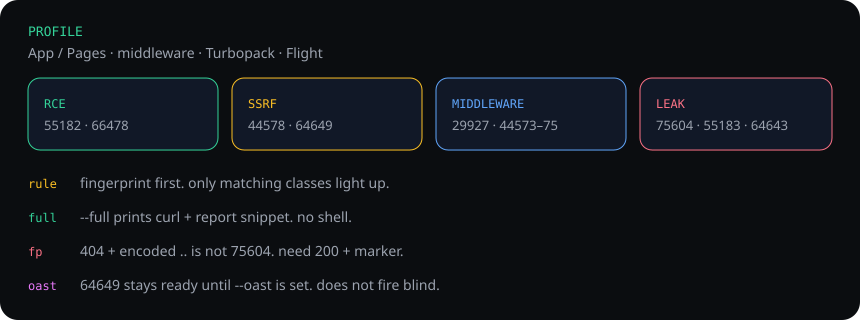

Summary
Next.js stopped being one surface years ago. App Router, Pages Router, middleware, Turbopack, Server Actions, RSC Flight, incremental cache each have their own parser and their own year of CVEs. A generic scan-the-host script either misses the class or fills the report with 404 noise.
NextForge is the operator pass for that stack. Profile first. Matrix second. Evidence third. The public helper lives on GitHub. This page is the class note: what it looks for, what it refuses to call a hit, and what a redacted lab session prints.
No payload bodies on this page. No live cloud host. No IMDS secrets. The still below is a classifier tape from an authorized lab labeled lab.nextforge.local.

What the tool is
A single Python file. No daemon. No SaaS. You give it a URL you already have written scope for.
python3 nextforge.py -t https://lab.nextforge.local --full profile → matching class → curl snippet → report block --auto operator mode. shell only after a closed hit. --pipe subfinder | httpx | nextforge. shell never opens.
--full is the report pass. Matching techniques run. It does not drop a shell. --auto is the operator pass: if a class closes, the session can hand you a prompt. --pipe is detect-only on purpose.
CVE-2026-64649 (Server Action host-header SSRF) needs an out-of-band listener. If --oast is missing the tool marks the class ready and does not fire. Blind SSRF noise is how reports die.
Fingerprint before fire
The first packets are not exploits. They are a profile:
- App Router vs Pages Router headers and HTML markers.
- Middleware presence (
x-middleware-*, rewrite fingerprints). - Turbopack vs webpack build marks.
- RSC Flight endpoints and action-id leakage surface.
- Windows vs POSIX cache layout — this decides whether 75604 is even in scope.
If the version string is not public, NextForge does not invent one. Classes that need a confirmed parser only light when the marker is there.

The matrix (class, not recipe)
Names below are public CVE classes. This page does not reprint request bodies, gadget chains or Flight payloads.
- RCE / Flight — CVE-2025-55182 and related Flight deserialization class (66478 window). Confirm is not HTTP 500. Confirm is a digest that resolves an operator marker such as
uid=/gid=on an authorized lab. - WS-upgrade SSRF — CVE-2026-44578. Self-hosted upgrade path. Cloud frontends often eat the probe.
- Middleware / prefetch / i18n — CVE-2025-29927 plus 2026 cousins 44573–44575. Signal is a protected route answering as if the gate was not there. A public 200 is not that signal.
- Action-id + Host SSRF — CVE-2026-64643 / 64649. Action-id disclosure is a finding. Host-header SSRF stays pending until OAST is wired.
- Source leak — CVE-2025-55183 class. Source map / server-reference artifacts on a production host.
- Windows incremental-cache traversal — CVE-2026-75604. See the false-positive rule below.
The 75604 rule
Windows cache traversal is the noisiest class. Encoded ..\ plus a 404 is not a hit. NextForge only closes 75604 when all of this is true:
- HTTP 200 on the cache path, not 404 / 403 / 500.
- Body carries
encryptionKey,server-reference-manifest, or a Windows file tell such aswin.ini. - The profile already said the host looks like a Windows incremental-cache layout.
404 + %5c..%5c ignored 200 + encryptionKey class closed do not file 75604 on a path list
Redacted lab pass
Authorized lab. Host renamed. Cloud metadata and digest bytes stripped. Mode was --full.
NextForge v2.1 target https://lab.nextforge.local fingerprint App Router · RSC Flight · x-nextjs-* middleware header present turbopack absent class 55182 / 66478 Flight RCE confirm digest resolved uid=1001 HIT RCE class closed · host [REDACTED] class 75604 Win cache paths 404 + encoded traversal ignored confirm rule 200 + marker only class 44578 WS-upgrade SSRF · no OAST this pass class 64649 Host SSRF · ready, not fired (--oast off) mode --full · report only · shell never opened mitsec@nextforge:
The RCE class closed because the Flight digest carried a process marker, not because the status line was 500. That distinction matters when a WAF returns 500 on every odd Content-Type.
WAF and parser notes
Managed edges rewrite Flight and multipart in ways that look like a miss. NextForge tags a blocked probe edge-ate instead of safe. Safe means the class was reached and the parser rejected it. Edge-ate means you never spoke to the app.
Cloud IMDS probes exist in the operator binary for authorized cloud labs. This page does not print those URLs or any harvested keys.
What this page will not do
- No Flight gadget, no proto-then body, no ready-to-paste RCE.
- No live AWS / GCP hostname.
- No instruction to run this against a host you do not own or have in writing.
If you need the operator file, it is the public repo. If you need a finding, attach the curl snippet NextForge already prints and the confirm rule from this note.
Fix posture (defenders)
- Stay current on the App Router / Flight / middleware advisories listed above.
- Do not expose Server Actions or RSC endpoints without the vendor mitigations for 55182 / 64649.
- Windows hosts: incremental cache directories are not a public document root.
- Strip source maps and server-reference manifests from production.
- Treat action-id disclosure as a finding even when SSRF is blocked.
Repo
NextForge stays on GitHub. Classifier model only. Written scope. Own lab.